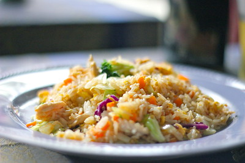

Fried Rice

Description
This colorful and savory chicken fried rice is packed with tender chicken, crisp vegetables, and fluffy rice stir-fried to perfection. It’s a quick and satisfying dish that brings takeout-style flavor right to your plate.
Ingredients
- Cooked rice
- Chicken
- Mixed vegetables (carrot, cabbage, etc.)
- Eggs
- Soy sauce
- Garlic & oil
Instructions
- Scramble eggs in a hot pan and set aside.
- Cook chicken pieces until browned.
- Add vegetables and stir-fry until just tender.
- Add rice and stir everything together.
- Season with soy sauce and mix in the eggs.
- Serve hot, optionally with green onions or extra sauce.
Home